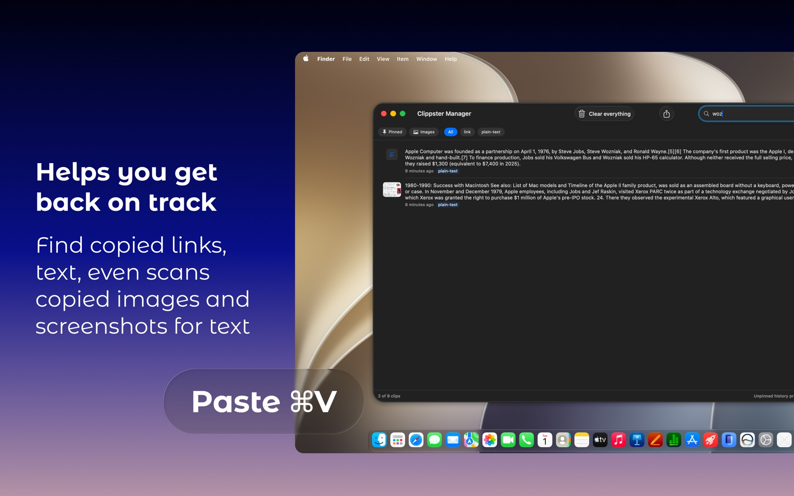
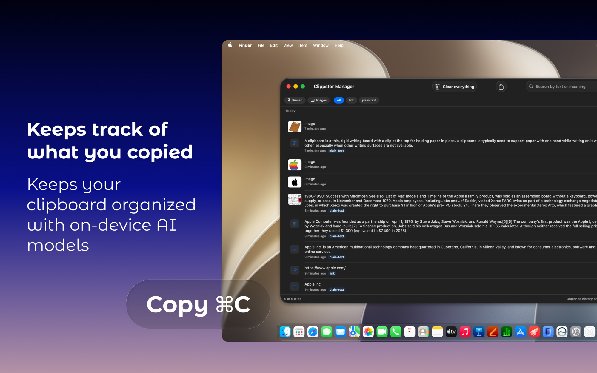
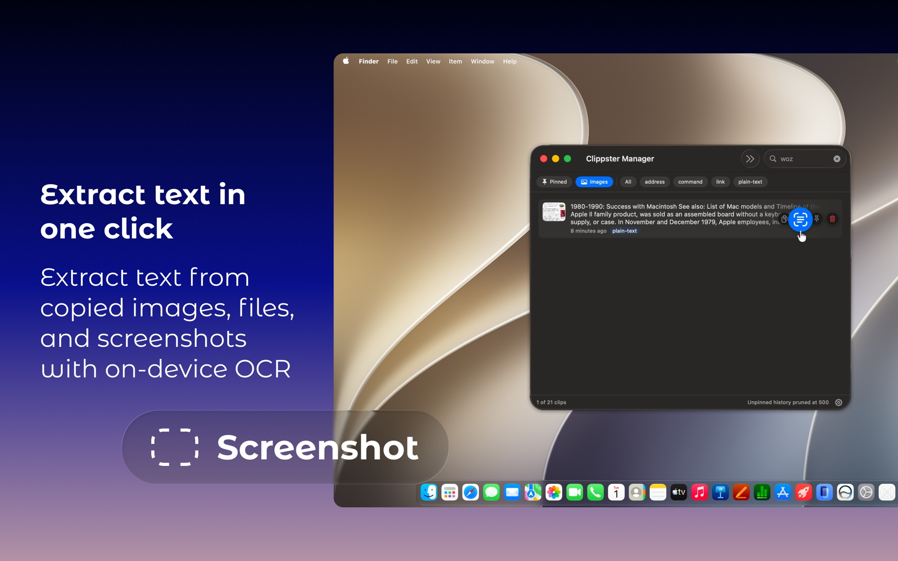
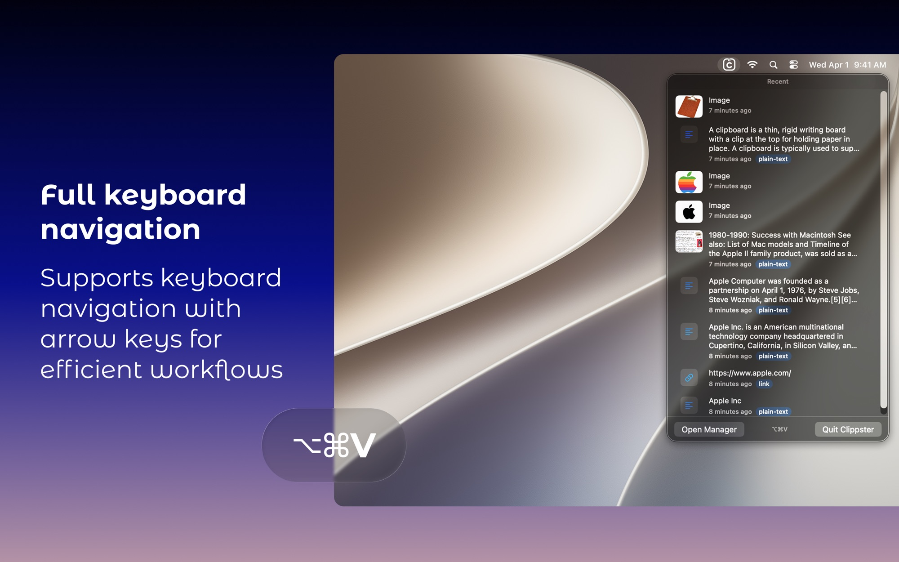

Search by meaning, not just words.
Sentence embeddings find the clip you’re thinking of — search
“terminal command” and find that git snippet.

Every copy, every screenshot — remembered, organized, and searchable by meaning. Everything stays on your Mac.
Every copy and every screenshot lands in a persistent on-disk history that survives restarts. Pin what matters forever; the rest prunes itself.

On-device intelligence
Every clip is enriched entirely on your Mac by Apple’s frameworks, and no data ever leaves the machine.
Sentence embeddings find the clip you’re thinking of — search
“terminal command” and find that git snippet.

Vision OCR makes every screenshot and image searchable. Copy the scanned text with ⇧↵, right from the popover.

A hybrid classifier files your clips automatically and flags anything that looks like a password or API key with a key icon. On macOS 26, Apple Intelligence resolves the ambiguous ones.
Press ⌥⌘V anywhere. Your latest 15 clips appear with live previews — arrows to move, ↵ to copy, P to pin. Hands never leave the keyboard.

Privacy
No cloud, no accounts, no analytics, no network. Every clip is enriched on-device by Apple’s frameworks. Your history is yours alone.
Concealed and transient pasteboard types are ignored at the source, so secrets never enter history.
No daemons, no polling, no logins: just a menu bar icon and a hotkey.
Export the full history to JSON, or clear everything, in one click.